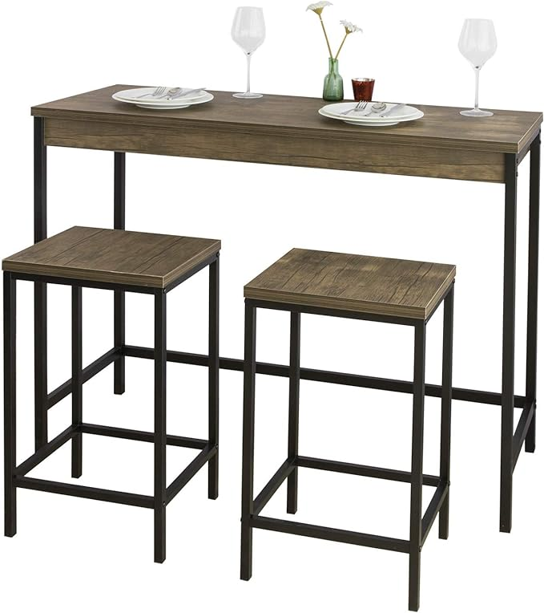
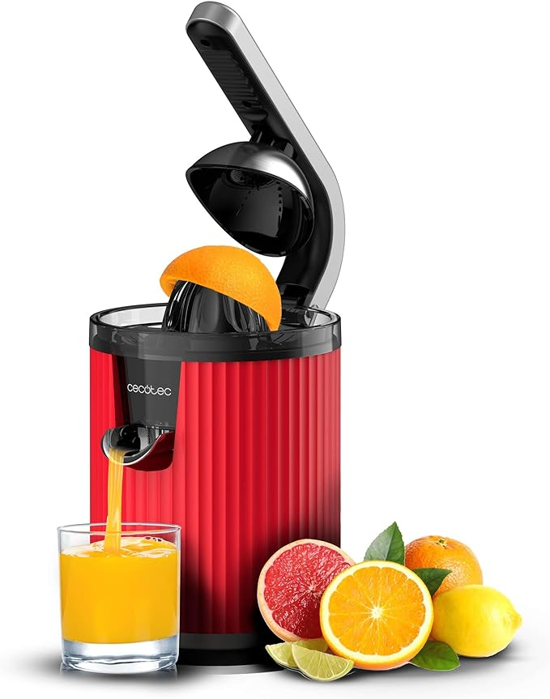
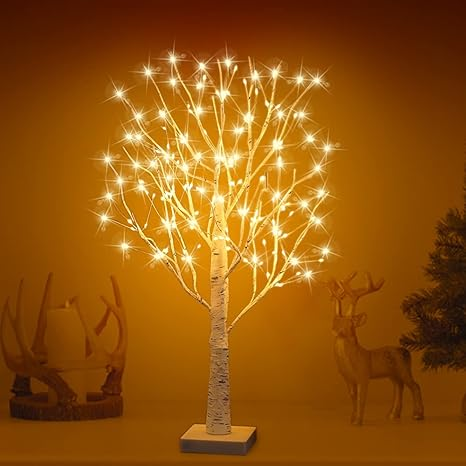

Macchina da caffé

|
PREZZO: 299,00€ |
Informazioni su questo articolo
- SISTEMA DI THERMOBLOCK: Il sistema di riscaldamento con thermoblock garantisce una maggiore velocità di preparazione all'uso della macchina e un controllo preciso della temperatura dell'acqua per l'erogazione del caffè
- CAPPUCCINO SYSTEM: miscelando vapore, aria e latte, assicura una schiuma densa e cremosa per poter preparare a casa propria un ottimo cappuccino
- VASSOIO REMOVIBILE: La possibilità di rimuovere il vassoio raccogligocce per l'alloggiamento di tazze grandi, rende la macchina altamente versatile
- ALLARME DECALCIFICAZIONE: La macchina manda un avviso quando è richiesta la decalcificazione
- PORTA FILTRO SEMIPROFESSIONALE: In acciaio inox con 3 filtri inclusi per caffè singolo, doppio e per cialde in carta
|
Tavolo da cucina

|
PREZZO: 109,90€ |
Informazioni su questo articolo
- Set di 3 pezzi - Elegante set composto da un tavolo da balcone e 2 sgabelli
- Materiale: Struttura in verniciato a polvere ferro. Piani in MDF (superficie: impiallacciatura di PVC), Peso 28.5kg
- Tavolo: L121*P46*A97 cm, Carico massimo: 75 kg
- Misure degli sgabelli: L38*P32*A66 cm, Carico massimo: 150 kg
- Con istruzioni di montaggio e le viti. Installazione facile.
|
Patata ottimista

|
PREZZO: 10,99€ |
Informazioni su questo articolo
- 【Patata Positiva】 - Riceverete 1 bella patata positiva di lana lavorata a maglia e contiene un biglietto con parole incoraggianti scritte su di esso, inoltre il biglietto è incollato con colla sicura e non tossica, quindi non c'è bisogno di preoccuparsi che il biglietto cada.
- 【Alta Qualità】- Le nostre divertenti patate positive sono tessute a mano con filati di lana di alta qualità, che rendono le nostre patate positive morbide, confortevoli e piene di elasticità e non facilmente deformabili, inoltre il filo di lana non è facile da sbiadire o cadere.
- 【Decorazioni Divertenti】 - Si può posizionare ovunque: in auto, sul comodino, sul tavolo da lavoro, in salotto, a scuola, sul bancone, in camera, in azienda, ecc. Farà la gioia di tutti coloro che passeranno di lì!
- 【Energia Positiva】 - Questa piccola patata è piena di energia positiva! Chi non la vorrebbe? Portate un po' di energia positiva nella vostra vita oggi!
- 【Grande Regalo】 - La patata positiva è un regalo ideale per amici, familiari e bambini, puoi regalarla alle persone intorno a te per aiutarle a riprendersi dalle delusioni! Ognuno dovrebbe rimanere positivo!
|
Spremiagrumi

|
PREZZO: 32,90€ |
Informazioni su questo articolo
- Spremiagrumi elettrico a braccio retrò per arance e agrumi con 600 W di potenza, filtro in acciaio inox, un cono in plastica, leva per estrarre la polpa e sistema antigoccia.
- Spremiagrumi elettrico per arance e agrumi con 600 W di potenza con filtro in acciaio inox che facilita la pulizia.
- 2 coni di plastica rimovibili per agrumi piccoli e grandi.
- Doppio senso di rotazione per sfruttare al massimo la frutta con accensione automatica premendo il cono con il frutto.
- Tamburo calibrato in ml con capacità di 1 L e ugello antigoccia per un versamento più facile e pulito.
|
Lampada da comodino

|
PREZZO: 29,99€ |
Informazioni su questo articolo
- 【Forma Elegante e Bella】Albero bonsai lampade alberi realistici, il ramo fino ramoscello luce è attentamente e squisitamente artigianale a guardare come un pezzo di opere d'arte. Luce per albero di Natale in stile bonsai impreziosita da molte luci a LED calde. Il filo di rame può intrecciare lo stelo e i rami, più attraente del vero bonsai vegetale.
- 【Rami regolabili】Lampada per albero di betulla rami dotate flessibile e pieghevole, la forma dei rami può essere regolata in base alle tue preferenze e possono essere posizionati in qualsiasi forma, usando la tua fantasia. Iniettando il tuo stile personale nella lampada da tavolo.
- 【Funziona a batteria / Porta USB】LED Albero Bonsai Lampada da Tavolo richiede 3 batterie AA (batterie NON incluse) o la ricarica USB.
- 【Facile da Installare】Lampada per albero di betulla decorativa è composta da tre parti: il corpo della lampada, la base e l'alimentatore (batteria AA o alimentatore USB). Basta collegare il corpo della lampada alla base, quindi collegarlo alla fonte di alimentazione da utilizzare. Può essere posizionato su una scrivania, comodino, mobile TV, ecc.
- 【Ampia Gamma di Applicazioni】Lampada con luce ad albero Ramoscello è adatta per tavolino da caffè, comodino, tavolo da pranzo, caffè, bar, hotel, ristoranti, matrimoni, feste, chiese, ecc. Può anche essere un ottimo regalo per bambini, amici o familiari. cerimonia di laurea, Natale, Ringraziamento, Pasqua e così via.
|
La tua opinoione è importante